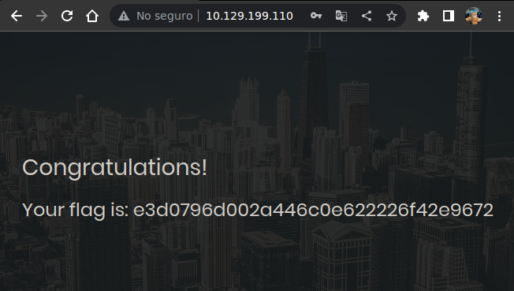

Resolución de la máquina Appointment de la plataforma de HackTheBox
Iniciamos escaneando los puertos de la máquina con nmap, con -sV para ver versiones
❯ nmap -sV 10.129.199.110
Nmap scan report for 10.129.199.110
80/tcp open http Apache httpd 2.4.38 ((Debian))
Ya que solo está abierto el 80 le damos un vistazo a la web y podemos ver un login
Podemos bypassear este login con una query sql de authentication bypass (articulo)
Al bypassear el login con sql injection nos loguea y nos muestra la flag

Vamos con las preguntas que nos pide la web de htb para pwnear la máquina
What does the acronym SQL stand for?
- Structured Query Language
What is one of the most common type of SQL vulnerabilities?
- SQL Injection
What does PII stand for?
- Personally Identifiable Information
What does the OWASP Top 10 list name the classification for this vulnerability?
- A03:2021-Injection
What service and version are running on port 80 of the target?
- Apache httpd 2.4.38 ((Debian))
What is the standard port used for the HTTPS protocol?
- 443
What is one luck-based method of exploiting login pages?
- brute-forcing
What is a folder called in web-application terminology?
- directory
What response code is given for "Not Found" errors?
- 404
What switch do we use with Gobuster to specify we're looking to discover directories, and not subdomains?
- dir
What symbol do we use to comment out parts of the code?
- #
Submit root flag
- e3d0796d002a446c0e622226f42e9672